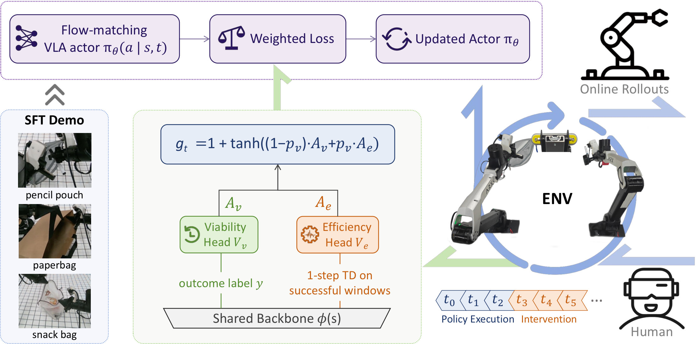
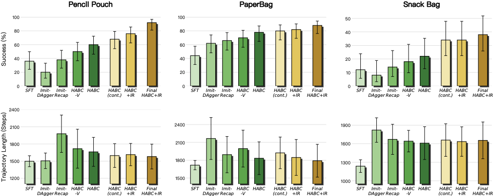

Abstract
When pretrained VLA policies are fine-tuned through online RL, each rollout episode produces only a single binary outcome, while the actor update requires per-transition supervision. HABC addresses this mismatch by training separate critic heads for viability and efficiency, combining their one-step advantages with a state-adaptive gate, and applying intervention-aware credit assignment so outcome labels do not leak across human and policy control boundaries. In real-robot experiments on three contact-rich bimanual tasks, HABC improves success rates from SFT baselines of 36%, 44%, and 12% to 92%, 88%, and 38%.
Consecutive Task Successes
These videos show consecutive rollouts from the final HABC policy on three contact-rich bimanual manipulation tasks. The evaluation order is Pencil Pouch, Paper Bag, then Snack Bag, where HABC achieves 6/6, 6/6, and 4/4 consecutive successes respectively.
SFT Failure vs. HABC Recovery
The SFT baseline often fails after entering off-demonstration states. After online fine-tuning, HABC learns recovery-aware actions from sparse outcomes and intervention data, allowing the policy to correct these failure modes and complete the task.
Method Overview
HABC treats a sparse episode outcome as two different learning signals. The viability head estimates whether a state can still lead to success, while the efficiency head estimates progress toward faster completion once success is reachable. A state-adaptive gate combines their one-step advantages into a bounded per-transition weight for the VLA flow-matching loss.

Real-Robot Results
The evaluation covers three contact-rich bimanual manipulation tasks with deformable objects. Compared with supervised fine-tuning, HABC substantially improves task success by learning recovery-aware behavior from online rollouts and human interventions.

Citation
@misc{fang2026habc,
title={Hierarchical Advantage Weighting for Online RL Fine-Tuning of VLAs from Sparse Episode Outcomes},
author={Tongyan Fang and Siyuan Huang and Naiyu Fang and Ganlong Zhao and Zhongjin Luo and Jianbo Liu and Xiaogang Wang and Ying Dong and Hongsheng Li},
year={2026},
eprint={2606.17043},
archivePrefix={arXiv},
primaryClass={cs.RO},
url={https://arxiv.org/abs/2606.17043},
}